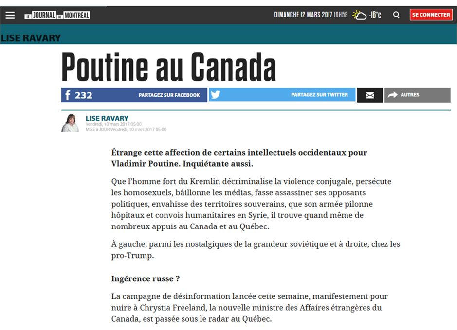

Je lis régulièrement vos rubriques et je trouve que la plupart du temps votre jugement est excellent et même si parfois je trouve que vous n'avez pas raison sur certains sujets, j'apprécie quand même votre raisonnement. À l'occasion cela me permet d'ajouter des argumentaires supplémentaires aux miens.
Aujourd'hui, cependant, je juge que vous vous êtes trompé lourdement et que manifestement vous ne connaissez pas bien le sujet que vous avez abordé.
Lorsque je fais un commentaire sur un sujet, ce commentaire est le reflet de mes discussions avec des membres de ma famille, de mon entourage, d'écoute de reportages télévisuels, de lecture (en fait de très nombreuses lectures) sur le sujet en lisant ceux qui sont pour et ceux qui sont contre.
Je ne suis pas du genre à me contenter de savoir, je suis plutôt du genre à vouloir comprendre d'où l'importance pour moi de bien m'informer sur le sujet sur lequel je me permets de faire des commentaires.
En ce qui concerne la Russie, mon intérêt date du 12 octobre 1960 (lorsque Khrouchtchev a brandi sa chaussure à l'ONU) et à partir de cette date j'ai lu quantité de livres écrits sur l' U.R.S.S. devenue la Russie en 1990. Les livres étaient écrits par l'immigration ayant fui à la révolution en 1917 J'ai lu également des livres parlant de Kerenski, Oulianov, Djougachvili, Khrouchtchev, Gromyko ainsi que de nombreux hommes importants de l’U.R.S.S., sur les raisons de la révolution ainsi que ceux abordant toute la période soviétique.
Plusieurs centaines de livres dans les faits.
De plus, afin de connaître mieux ce pays je lis également ce qui se publie en Russie afin de bien cerner ce qu'est ce pays. Il faut s'intéresser non pas uniquement aux publications paraissant en occident mais également à celles publiées en Russie afin d'éviter un parti pris.
Je crois avoir une bonne vision de ce pays dirigé par un véritable chef d'état. Non pas une personne qui se prétend chef d'état et qui véhicule sa personne sur toutes les tribunes possibles, mais un homme qui défend la population russe et la Nation russe attaquée de toutes parts, le lendemain de la fin des jeux olympiques tenus à Sotchi.
Il est de bon ton pour beaucoup d'être contre la Russie et d'attaquer la Russie.
N'eut été cet homme, doué d'un grand calme et d'une grande force de contrôle de soi , il y aurait longtemps que la guerre aurait eu lieu à une échelle telle que l'Europe aurait subi de grands malheurs vu que les armées de l'Otan sont aux frontières de la Russie alors que tous les chefs d'états occidentaux prétendent que c'est la Russie qui agresse.
Curieuse façon de montrer qui agresse qui.
N'eut été la façon d'agir du président de la Fédération de Russie Vladimir Vladimirovitch Poutine, il y a longtemps que la guerre aurait été commencée. Mais il est vrai que les pays occidentaux, dont notre voisin du sud, rêvent d'une guerre contre ce pays. Que Dieu nous en préserve.
Vous écrivez dans votre rubrique que la Russie est une dictature ne laissant place à aucune opposition, ce qui est faux. La Russie, certes, n'est pas parfaite en tout, mais il y a croyez-moi beaucoup de médias (The New Times etc.), beaucoup de chaînes de télévisions dont Dojd Дождь (la pluie) qui ne portent pas le président de la Russie dans leurs cœurs et celles-ci sont toujours en activité, ce qui vous l'avouerez ne correspond à votre description de ce pays.
De plus plusieurs chaînes de télévisions ont des émissions de débat (60 minutes/60 минут Rossiya 1, Droit de parole/Право голоса TV Centre, Le premier studio/Первая студия et Le temps le montrera/Время покажет) qui ont des invités qui vous surprendrait puisqu'ils sont américains et donnent farouchement leurs points de vues (Michaël Baüm l'un des plus célèbres et de toutes les tribunes), de même que des invités ukrainiens qui discutent de ce qui se passe en Ukraine et tous débattent sans que rien ne soit censuré.
Vous pensez que notre pays pourrait être noyauté par la Russie ? J'en doute.
Par contre, le poste que détiens Christina (Chrystia) Freeland en tant que ministre des Affaires étrangères et sa vision doit interpeller tous les Canadiens puisque cette dernière à une farouche opposition contre la Russie et son chef. Ses racines ukrainiennes par ses grands-parents démontrent des liens avec le nazisme de son grand-père et ce qui s'est passé en Ukraine lors de la dernière guerre.
Notre pays a actuellement avec la Russie et d'autres pays des discussions excessivement importantes en ce qui concerne l'Arctique et les droits que chacun des pays concernés a dans cet espace convoités pour ses grandes richesses naturelles. Une bonne relation entre pays souverains est importante et le fait de s'attaquer à la Russie par le soutien de notre pays à l'Ukraine en démonisant la Russie n'aidera certainement pas.
Comme vous le savez sans doute, le parti conservateur a été élu au pouvoir grâce à l'appui de votants ukrainiens de l'ouest canadien et notre politique extérieure en ce qui concerne l'Ukraine date de ce temps où notre pays n'a pas hésité un seul instant à reconnaître le coup d'état permettant à Porochenko de devenir chef de l'état. Depuis nous avons soutenu ce régime par beaucoup d’argent, des armes dites non létales qui servent, entre autre, à bombarder sa population russophone dans l'est du pays. D'ailleurs vous n'êtes pas sans savoir que ce qui s'est passé lors de ces événements l'a été à l'instigation de nos voisins de sud qui voulaient s'approcher de la Russie ", Manifestement la signature des pays occidentaux et de l'Otan, en 1990 après la chute du communisme mentionnant qu'ils ne s'approcheraient jamais de ce pays, n'a pas été respectée par ces mêmes signataires. Un détail sans doute.
Dans votre article vous écrivez « il n'en fallait pas plus pour que nos idiots utiles ». Je me sens visé par ces mots. Ces mots « idiots utiles » proviennent des médias usaniens et ont leur origine au département d'État des usa et ont été repris abondamment dans les médias occidentaux comme un terme « bien » alors qu'en fait que c'est un terme qu'on demande, à ceux qui sont à la botte, d'écrire. Je trouve triste qu'on se contente de répéter sans vérifier d'où proviennent les sources.
J'ai depuis de nombreuses années écouter des chaînes russes et j'y ai vu des reportages, des entrevues sur le terrain dont dans le Donbass qui a été bombardé pendant au moins 9 mois par l'armée ukrainienne et jour après jour on a vu à la télé russe les comptes rendus (massacres de populations civiles sans distinction), des nouvelles que jamais on ne voit dans les médias occidentaux toutes sources confondues. Lorsque vous écrivez que la Russie a bombardé des hôpitaux en Syrie, a bombardé des convois humanitaires (ce que l’ONU a démenti il y a quelques jours), j'ai, vous me passerez l'expression, un affreux doute pour ne pas dire un très affreux doute sur vos sources.
Je comprends qu'on ne peut tout savoir, ni tout lire. Mais là je crois que pour cette rubrique vous êtes selon l'expression consacrée « à côté de la traque ».
Soyez assurée que je vais continuer à vous lire mais j'aurai encore plus l'œil critique.
S.V.
P.S. : Autrefois lorsque le régime soviétique était en fonction, il y avait des spécialistes qu'on appelait des kremlinologues et qui ne parlait pas russe et ces derniers devaient avoir recours à des interprètes. Rien de tel que de comprendre la langue pour être mieux capable de se faire une opinion.

Partager cette page